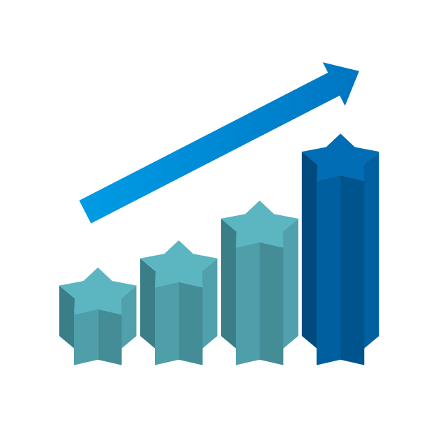
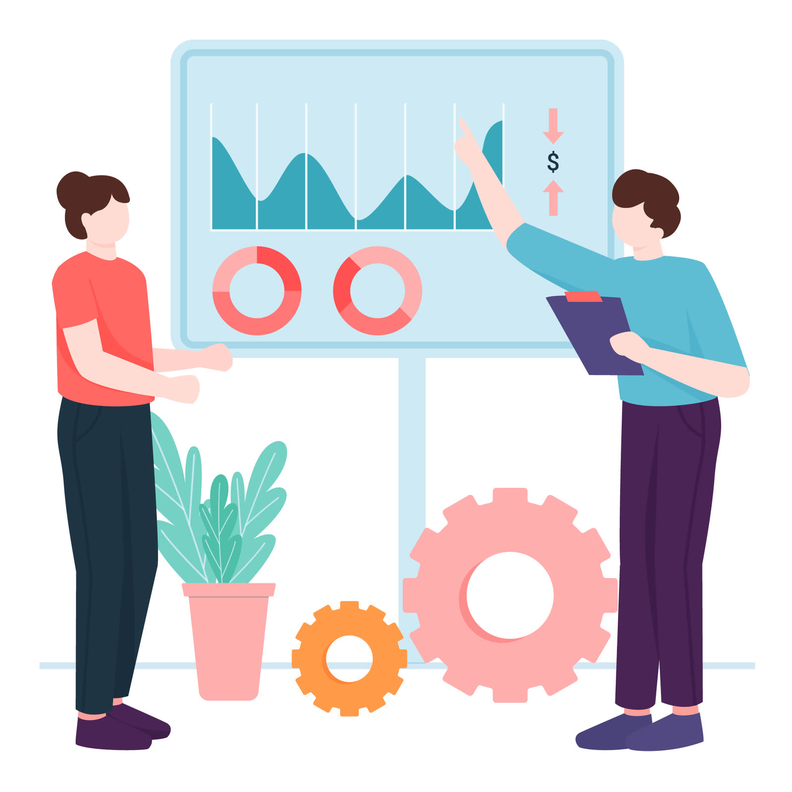
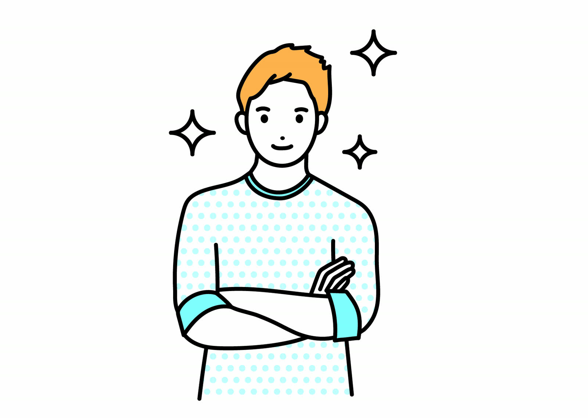

SEO・コンテンツ
検索意図の構造化から記事制作、内部改善まで。指名検索と比較検索の両面から流入をつくります。
- ●キーワード設計・競合分析
- ●記事制作・リライト運用
- ●テクニカルSEO改善
TEL 092-200-0000
受付時間 平日 9:00-18:00
FUKUOKA / DIGITAL MARKETING
戦略設計から広告運用、サイト制作、効果検証まで。分断されがちな施策をひとつのチームで担い、事業の数字が動くところまで伴走します。
ABOUT US
2014年の創業以来、私たちは「レポートが綺麗な会社」ではなく「売上が伸びる会社」であることにこだわってきました。施策を単体で請け負うのではなく、集客からリードの質、商談化率までを一本の線として設計します。
戦略担当・運用担当・クリエイティブ・エンジニアが同じチームで動くため、意思決定が速く、改善のサイクルが止まりません。
私たちについて詳しく→WHY SORATO
調査・戦略・広告・制作・分析を社内で完結。外注の伝言ゲームがないぶん、判断が速く、施策の一貫性が保たれます。
平均在籍7年のシニア中心。初回の商談から運用まで同じ担当が伴走し、事業理解の蓄積をそのまま成果に変えます。
見栄えのする指標ではなく、売上に接続する指標を定義。翌月の打ち手までセットで提示します。
SERVICES
単体でのご依頼も、フルファネルでの伴走も可能です。現状の課題に応じて必要な範囲だけを組み合わせます。
検索意図の構造化から記事制作、内部改善まで。指名検索と比較検索の両面から流入をつくります。

CPAではなく受注単価で管理。媒体横断で予算を配分し、獲得の質そのものを改善します。
見た目の刷新で終わらせません。計測設計を前提に構造をつくり、公開後の改善まで前提に含めます。
PROCESS
事業計画と現状の数字を共有いただき、ボトルネックを特定します。初回は無料です。
KPIと投資配分、想定スケジュールを提示。費用対効果の見込みまで数字でお出しします。
制作から運用までを担当チームが実行。週次で進捗を共有し、小さく速く改善します。
成果の出た施策に予算を寄せ、再現性のある型にします。月次で次の打ち手を提示します。
CASE STUDIES

検索流入はあるのに商談に繋がらない状態から、導線とコンテンツを再設計しました。
新規獲得偏重だった配分を見直し、LTVの高い層への再訴求に投資を寄せました。
媒体依存からの脱却を目標に、自社サイトでの応募獲得基盤を新設しました。
VOICE
「レポートの数字が社内会議でそのまま使えるようになりました。何を増やせば売上が伸びるのかを、同じ言葉で話せています。」
「制作と運用の窓口が一つになったことで、改善のスピードが明らかに変わりました。依頼から反映まで最短で翌日です。」
「できないことははっきり言ってくれます。予算の使い道に納得感があり、社内の説明もしやすくなりました。」
FAQ
運用支援は6か月からをお願いしています。施策の効果が数字に現れるまで一定の期間が必要なためです。制作単体のご依頼に期間の縛りはありません。
運用支援は月額30万円から、サイト制作は150万円からが目安です。体制と対応範囲によって変動するため、初回のヒアリング後にお見積りをお出しします。
全国対応しています。定例はオンラインが中心ですが、キックオフや重要なフェーズでは訪問も可能です。
可能です。アカウントの移管手順や、切り替え時に成果を落とさないための引き継ぎ計画もあわせてご提案します。
SERVICES
集客から受注までの流れを一本の設計図にしたうえで、必要な施策だけをお引き受けします。単体でのご依頼も歓迎です。
検索意図を構造化し、比較検討段階の需要を取りにいきます。順位ではなく、問い合わせに繋がる流入を増やすことが目的です。
獲得件数ではなく受注につながった件数で評価します。無駄クリックの削減と、取りこぼしている検索面の開拓を同時に進めます。
フォロワー数を目的にしません。指名検索や資料請求など、事業側の指標が動く運用設計を行います。
公開がゴールではなく起点です。改善できる構造とCMS、計測環境をセットで納品します。
選ばれる理由を言語化し、社内外で共有できる状態にします。あわせて意思決定に使えるダッシュボードを整備します。
CASE STUDIES
課題・打ち手・結果をそのまま公開しています。数字は各社の許諾を得たうえで掲載しています。
課題 流入はあるが商談化しない。
施策 導線再設計と技術資料の整備。
結果 問い合わせ340%、単価42%減。
課題 新規獲得偏重で利益が伸びない。
施策 LTV上位層への再訴求に予算を配分。
結果 売上190%、ROAS2.3倍。
課題 求人媒体への依存とコスト上昇。
施策 自社応募基盤の新設と広告の再設計。
結果 応募単価51%減、6か月で到達。

課題 リード数は足りるが質が低い。
施策 訴求の絞り込みとフォーム設計の見直し。
結果 商談化率31%、受注数1.7倍。

課題 広告を止めると予約が止まる。
施策 症状別コンテンツとMEOの整備。
結果 自然流入からの予約が月120件増。

課題 初回購入後の離脱が大きい。
施策 同梱物とメール体験の再設計。
結果 3か月継続率が14pt改善。
ABOUT
福岡を拠点に、全国の事業会社のマーケティングを支援しています。
2014年、事業会社でマーケティングを担っていた3人で創業しました。発注側として感じていたのは、提案は立派でも実行が伴わない、数字の報告はあっても次の打ち手がない、という不満でした。
だから私たちは、自分たちが発注したいと思える体制をつくりました。戦略から実装までを同じチームで担い、翌月の打ち手までを毎回提示する。それが創業から変わらない仕事の仕方です。
マーケティングを、
事業の成長装置にする。
地域の優れた事業が、
正しく見つかる状態をつくる。



INSIGHTS
現場で検証した内容だけを書いています。一般論は載せません。
支援先38社の実データから、検索・広告・コンテンツの投資比率と成果の関係を整理しました。
CONTACT
ご相談・お見積り・採用のお問い合わせはこちらから。通常2営業日以内にご返信します。
株式会社ソラト
〒810-0001 福岡県福岡市中央区天神2-1-1
TEL 092-200-0000（平日 9:00-18:00）
CONTACT
初回のご相談とマーケティング診断は無料です。現状の課題を伺い、優先すべき打ち手を整理してお返しします。売り込みはいたしません。
受付時間 平日 9:00-18:00 ／ 通常2営業日以内にご返信します